Sälu, I am
Interdisciplinary Thinker
Creative Doer
Creative Doer
Plenty of Space left.
Contact Me.


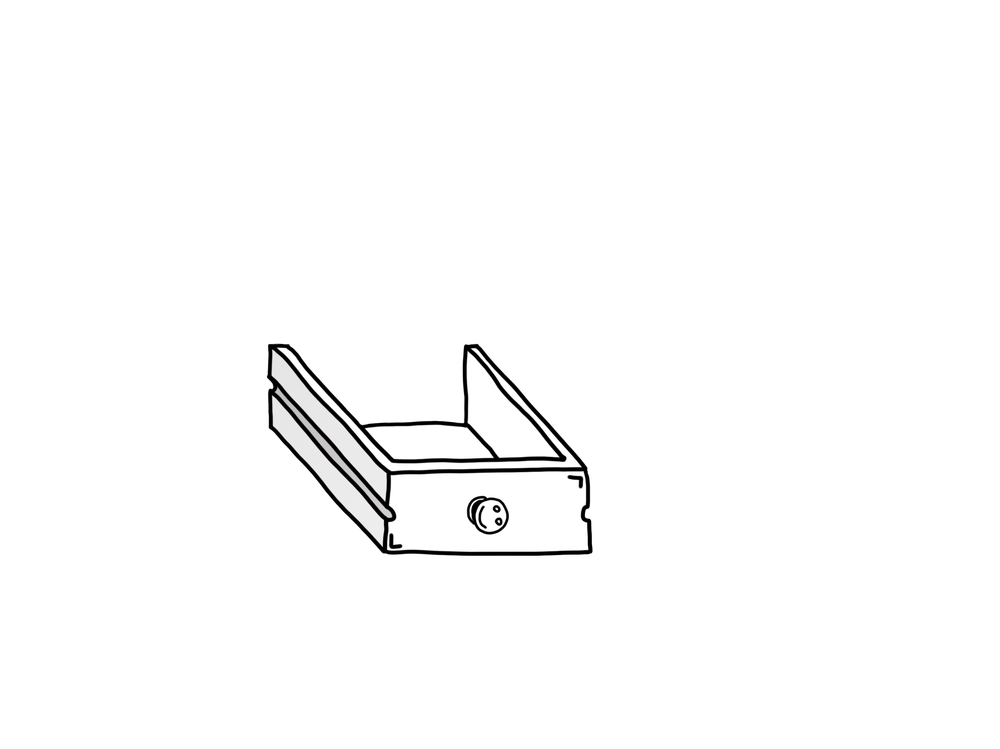


Study Project
Dario Zaugg, Luca Zeller, Raman Seysan
Through a cube in the middle of a room with 8 speakers around, the player controls the game that just happens sonically. An energy-ball enters the room and the player activates invisible walls to catch the ball and let it bounce inside the room as long as possible.
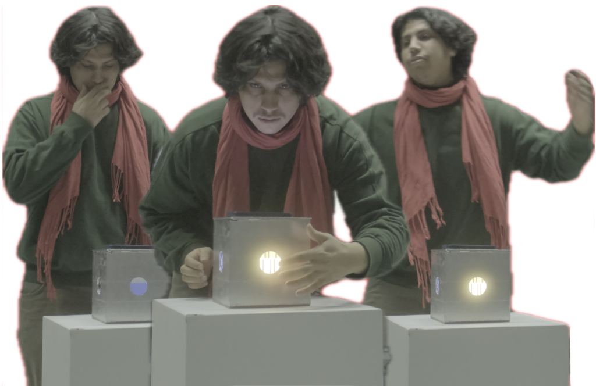
I mainly created the concept of the game and adapted it continously to the technological possibilities and the ongoing testing results. I was also responsible for the testing and the user experience through the sound design.
Inspired by an old Pong game in a museum, a scientist in a future world comes up with an idea to resolve the energy crisis of her time: By catching regularly emerging orbital starstrucks inside of an enormous cube in space, more energy can be yielded than with any other present power source. But there is a problem: each bouncing off a wall destroys the created walls of the cube which gather energy from each impact. You as a player have been chosen to quickly rebuild every wall and do that at the right place. You can only create two walls at a time and need to think ahead of where the energy mass will bounce off next. If the starstruck exits the area of the virtual cube, you can not produce more energy and have lost the game. Because of their speed, your only sense of navigation is that of your ears.
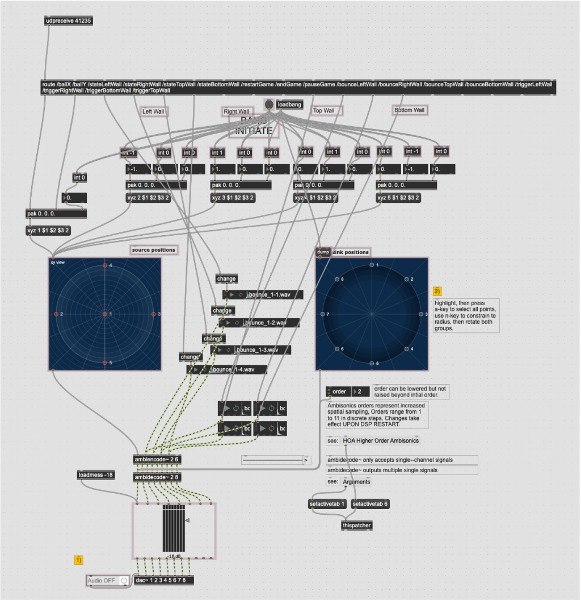
For the Sound Design I used Ableton Live. For the energy-source I created layers for water, fire, drone, a high whistling sound to convey the speed of the object and two rich layers of analog-modelled synthesisers to give the warm basis. I used the chord Cmaj9 to further trigger positive and bright emotions. How do talk about design of something, that you do not see? I used the Image LLM Adobe Firefly to generate pictures as base for our team communication to talk about how we want to create the sounds
For the Audio Setting we used a 16-Channel Focusrite Interface connected to 8 Genelec Speakers, to be able to create spatial sound physically. To be able to control our sounds in the 3D space, we used the ICST Ambisonics Externals, a tool for the software MaxMSP. We used the OSC-Signal of 5 phones inside of the cube, on which we used websockets to send OSC-Signals into MaxMSP to be able to controle the inputs and change the sounds. The game logic is also implemented in MaxMSP.
Private Project
Dario Zaugg, Simon Schertenleib
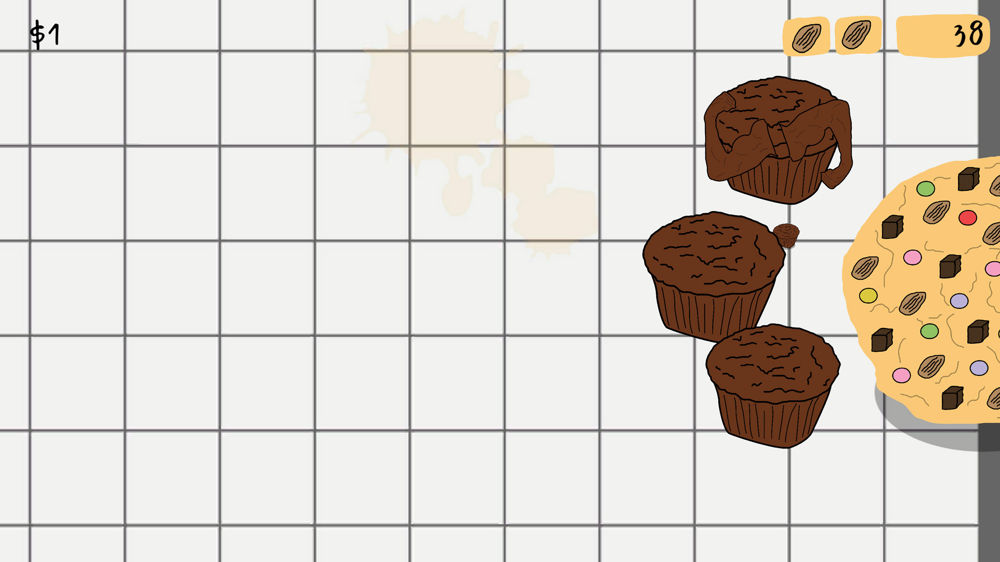
To step into the topic of Game Development and the program Unity, we joined a Game Jam without a lot of experience in that field. With the term “Two sides of a coin” we created a 2D Game with the wordplay of «Cookie Builder», because in one phase you build your cookie by eating smarties, chocolate, almonds and fighting muffins but in a second phase you are also a body builder that gets rated and gets money by building the right toppings. In a 3. Phase you go into the oven, to get baked – again having two sides of a coin because a Body Builder often tans themselves and here it is tanning but also building.
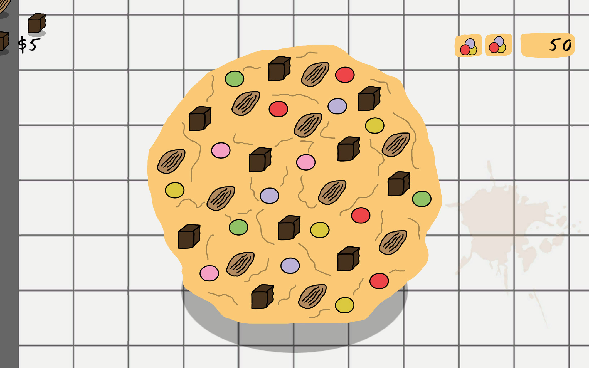
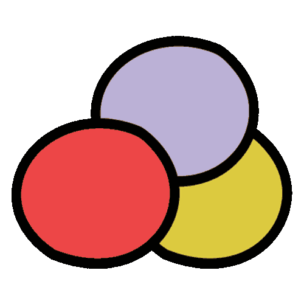
The Game Jam's Challenge was to make a Game to "Two Sides of the same Coin". We didn't wanted to take this literal, so we came up with the word play of building a Cookie and Cookie Body Builder. While the player builds the Cookie by choosing the toppings, the Cookie itself is a Body Builder that want's to win Body Builder Contests.
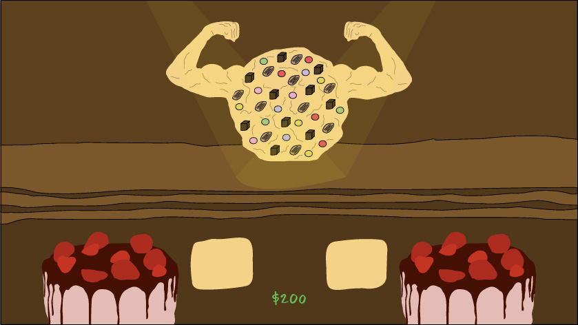
Visualization, Co-creation of the concept as well as ongoing exchange about the technical solution.
Study Project
Dario Zaugg, Ege Seçgin, Jeanne Antonin, Luca Zeller, Anna Senko
The concept of this interactive art installation is based on exploring the deeper philosophical meaning of light. Except for seeing light, people give different, more esoteric meanings to it, as shown in phrases like «internal light» or «finding the light at the end of the tunnel».
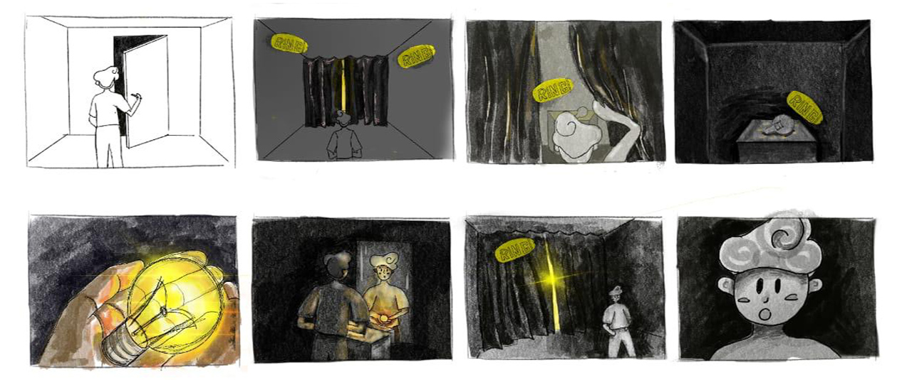
I mainly focused on the concept and the user experience. What is their perception and how can we make an understandable, yet moving experience? I also co-created the room and soldered the sensors.
To give more natural feedback for «picking up» and «hanging up» the bulb, we implemented some sample sounds that artificially mirrored this experience. By using the phone ringing analogy, we could lead the visitor through the slightly lit room to grab the bulb and see what happens. When the visitor grabbed the bulb, the ringing stopped and the bulb lighted up while they could see themselves in the mirror that now emerged out of the dark. Creating a silent and intimate moment with the chance to see their own inner light.
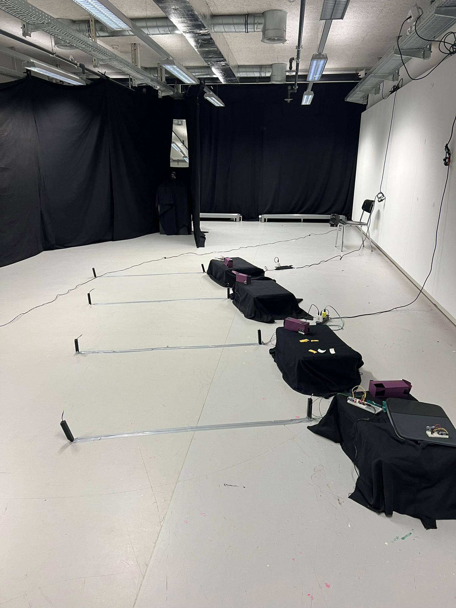
By using a simple electronic switch inside the styrofoam base, we could recognize if the bulb was lifted or not. By connecting an Arduino to a Macbook via a p5.js sketch, we could playback an audio file based on the current state of the switch.
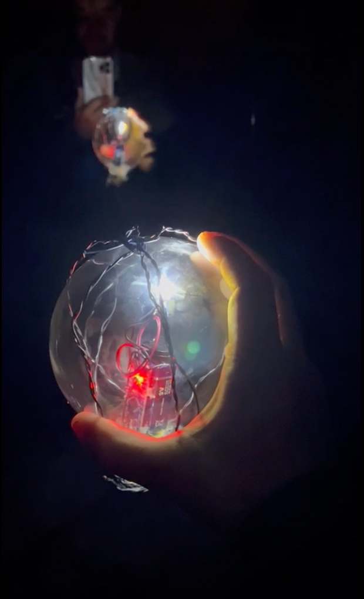
Study Project
Dario Zaugg, Elias Müller, Aisha Monsar, Laberi Mehmeti
Explore nine different ecosystems such as the Savannah and learn how they contribute to a better world. The table also invites to collectively reduce excess carbon in the air by turning the chosen Ecosystem-Token, visualising how the different Bioms help cutting carbon emission by 1100 gigatons – a set goal – to make the world a better place.
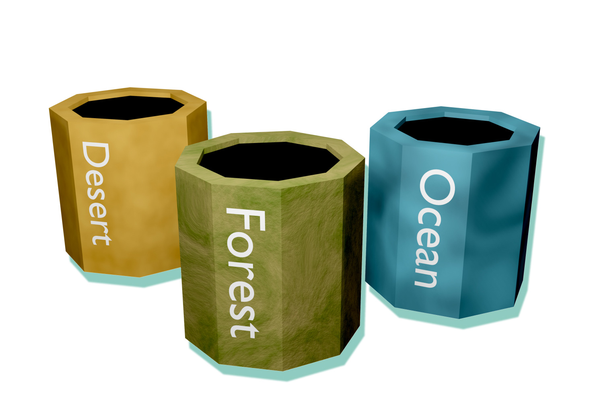
As Project Manager I helped navigate and structure the project. I organised various co-creation sessions to collaborately work towards the concept. I heavily focused on user-experience and interaction as well as the presentation and Stakeholder Meetings.
On one side we focused on the single experience of every visitor. You first take a physical token of a biom that you are interested in, such as Ocean and then you place it on the table. Every token has it’s own menu where you can change language and also get various information about the biom, allowing to simultaniously have up to 9 visitors use the table. On the other side there is the CO2-goal of 1’100 gigatons as visual circle in the middle. This stands for the approximate amount that is human caused over the past few centuries primarly from burning fossil fuels and land-use changes. Every bioms have the ability to reduce excess carbon in the air and through turning around the tokens, this is visuallised by an animation that takes the carbon away from the middle and adds it around the token. This showcases the strength and importance of the bioms in fighting excess carbon in the air, fostering an understanding for the role of the various bioms.
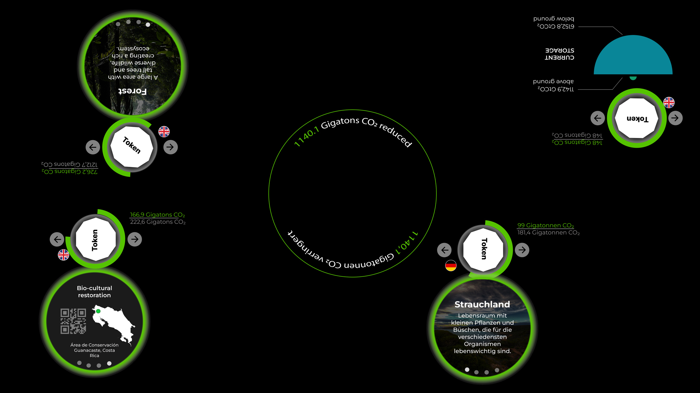
The prototype was made in Figma and through «Wizard of Oz» we were able to make the idea graspable to the project partner. I explained a specific flow while my teammate interacted with the table and someone else controlled the animated prototype in the background. This allows us to get feedback on the concept, without having to already put a lot of time into the technical implementation.
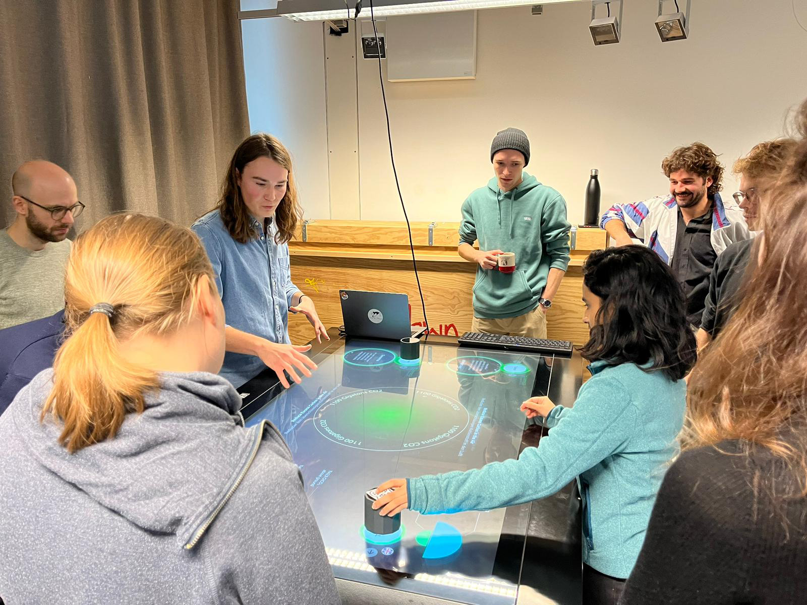
Study Project
Dario Zaugg, Anja Fritschi, Irina Lezaic, Elia Salerno
Localista is a scaleable collection of user-experience and service design guidelines (in form of a booklet), aimed at conventional stores to improve the experience of buying and increase the sales of regional and seasonal produce. The problemfield as well as the solutions was co-created with customers of grocery stores.
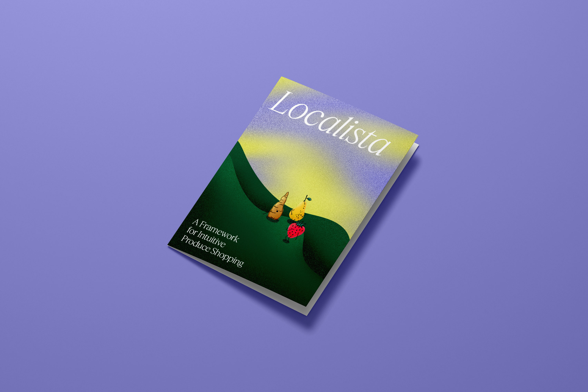
I focused on the User Research and User Experience as well as the concept part and the ongoing research loop to further develop the project.
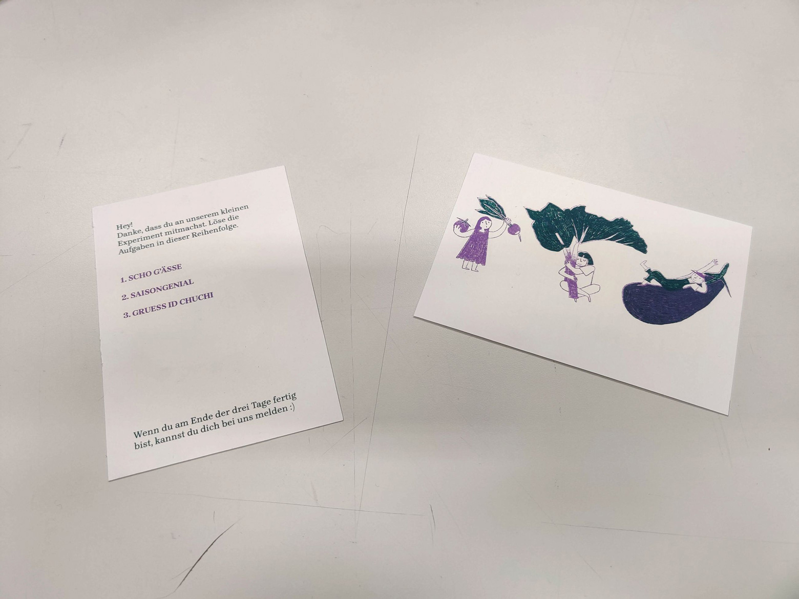
Next to classical interviews, we used cultural probes to learn more about our customers and their connection with food usage. A cultural probe is a package that contains various things. In our case, it’s a 1-week bundle filled with fun tasks to do, such as a challenge to only cook saisonal and a week-long timetable to remember all the foods you ate the last week. All those informations helped us understanding our user and therefore understand for who and which needs we design. Through workshops we tested our prototype of an alternative store that focus on regional food products and see how people perceive the new system. People appreciated, that it provided more obvious informations and that regional and seasonal products were found in the first area and were not mixed with the rest. Through this it’s possible to first have a look if you find something there.
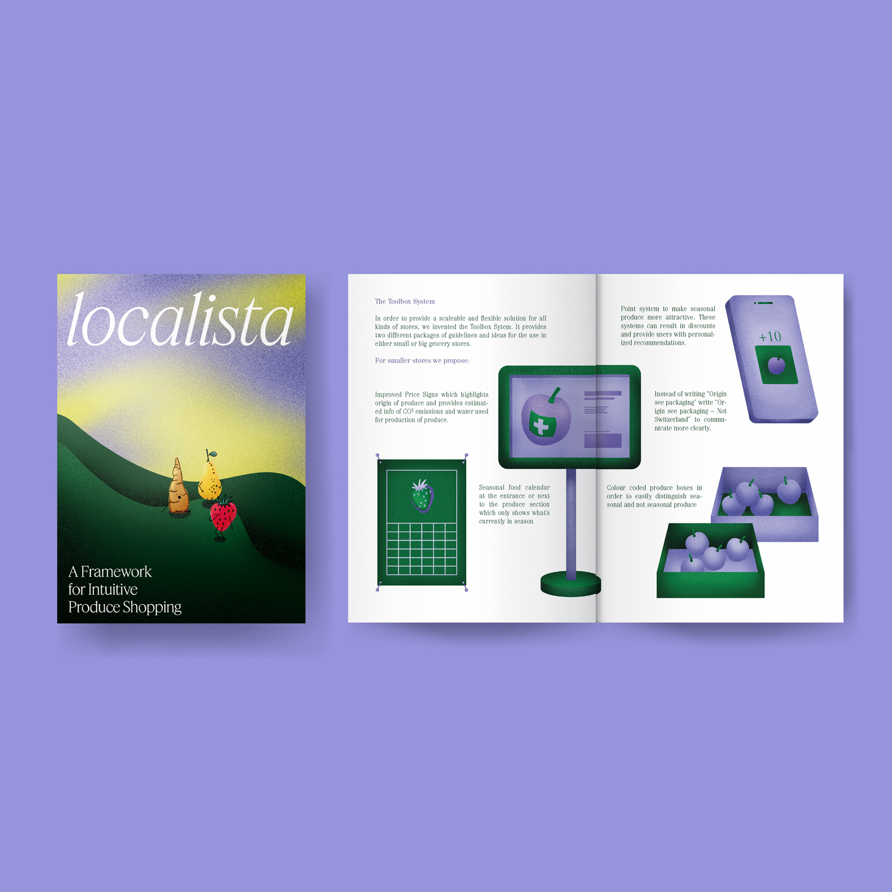
Study Project
Dario Zaugg
People constantly decide between productivity and the need for rest. Rest, Reel, Reflect turns the two most familiar artifacts of that negotiation, the bed and the phone, into a combined, tactile experience. Visitors lie down, scan QR-codes embedded in the blanket and enter a reflective journey about their time-wasting and its value.
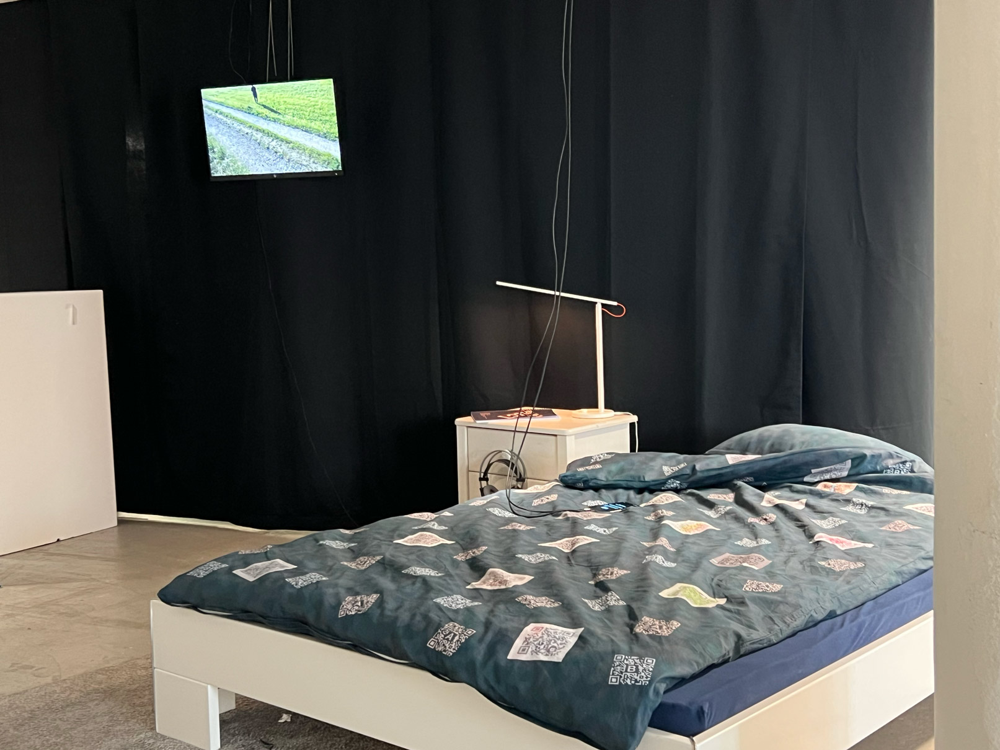
The bed is the oldest «time‑wasting» device and a universal symbol of rest, yet it also carries cultural weight (Yoko Ono’s Bed‑in for peace). The embedded data in a textile makes invisible digital content physically reachable while sound preserves the intimate, contemplative atmosphere without adding visual clutter, allowing the blanket’s pattern to remain the visual anchor and the bed as place of rest to have the eyes closed from time to time.
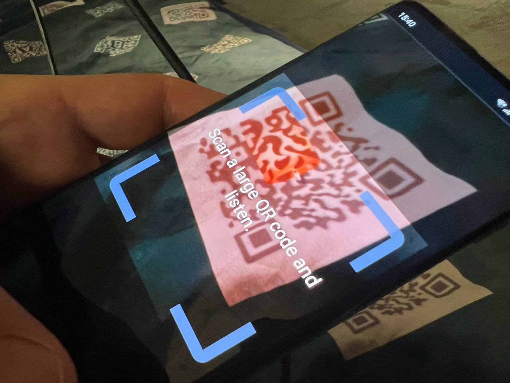
The QR-codes are created with a QR-maker and then used in Stable Diffusion as ControlNet, to be able to embed their story in the visuals while being able to still read the QR-code. Fabric prototyping I prototyped with paper-QR-codes on a blanket and later started doing my own blanket with heat‑transfer paper that I then applyed on synthetic fiber. Audio Speaker integrated underneath the bed, on head height directly connected with the phone over auxilary. Website I used qrcode-library for the scanner and decided to use a website to run the scanner, because it’s way more compatible and customisable compared to using the built-in camera-scanner of phones.
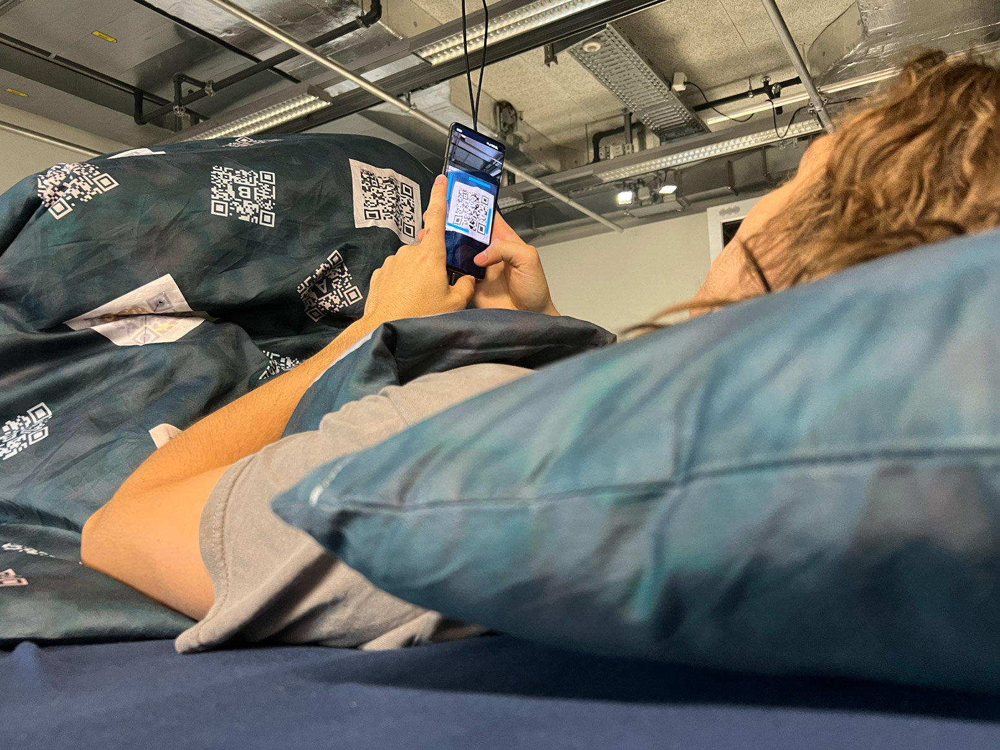